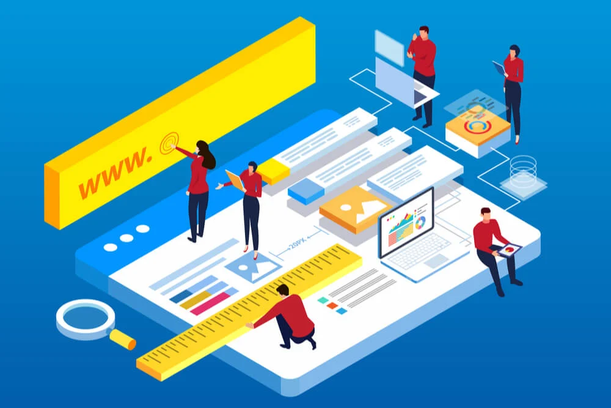
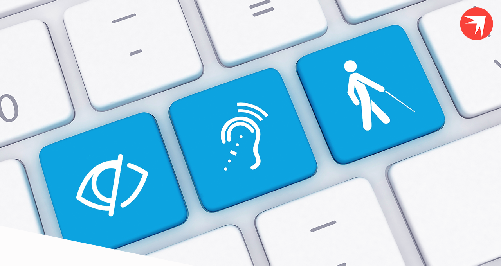
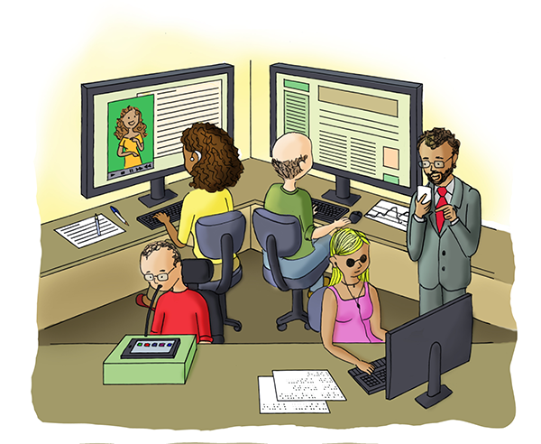

O que é acessibilidade?
- o Decreto Federal n° 5.296/2004 [1], em seu artigo 8°, I, estabelece:
“I – acessibilidade: condição para utilização, com segurança e autonomia, total ou assistida, dos espaços, mobiliários e equipamentos urbanos, das edificações, dos serviços de transporte e dos dispositivos, sistemas e meios de comunicação e informação, por pessoa portadora de deficiência ou com mobilidade reduzida;”
- A Convenção Internacional Sobre os Direitos das Pessoas com Deficiência, adotada pela onu em 30 de março de 2007, em nova York, e ratificada pelo Decreto Federal n° 6.949 de 25 de agosto de 2009 [2], estabelece em seu artigo 9 o, item 1:
“A fim de possibilitar às pessoas com deficiência viver com autonomia e participar plenamente de todos os aspectos da vida, os Estados Partes deverão tomar as medidas apropriadas para assegurar-lhes o acesso, em igualdade de oportunidades com as demais pessoas, ao meio físico, ao transporte, à informação e comunicação, inclusive aos sistemas e tecnologias da informação e comunicação, bem como a outros serviços e instalações abertos ou propiciados ao público, tanto na zona urbana como na rural”.

O que é acessibilidade na web?
”Acessibilidade na web significa que pessoas com deficiência podem usar a web. Mais especificamente, a acessibilidade na web significa que pessoas com deficiência podem perceber, entender, navegar, interagir e contribuir para a web. E mais.Ela também beneficia outras pessoas, incluindo pessoas idosas com capacidades em mudança devido ao envelhecimento”.
Para que a acessibilidade na web seja alcançada, é necessário que vários componentes estejam trabalhando adequadamente em conjunto. A W3C-WAI [9] identifica sete componentes:
- Conteúdo é a informação contida numa página ou aplicação web, incluindo:
- Navegadores são os tocadores de conteúdo multimídia e outros agentes do usuário.
- Tecnologia assistiva é aquela usada por pessoas com deficiência e mobilidade reduzida, como é o caso dos programas leitores de tela, dos ampliadores de tela, dos teclados alternativos, entre outros.
- O conhecimento do usuário, sua experiência e, em alguns casos, suas estratégias adaptativas para a utilização da web.
- Desenvolvedores, designers, codificadores, autores, entre outros, incluindo pessoas com deficiência que são desenvolvedores e usuários que contribuem com conteúdo.
- Ferramentas de autoria (authoring tools): softwares usados para criar sítios web
- Ferramentas de avaliação: avaliadores de acessibilidade, validadores de HTML, validadores de CSS, entre outros.

Projetando para todos
São sete os princípios do Desenho universal [12]:
- Equiparação nas possibilidades de uso: pode ser utilizado por qualquer usuário em condições equivalentes.
- Flexibilidade de uso: atende a uma ampla gama de indivíduos, preferências e habilidades individuais.
- Uso simples e intuitivo: fácil de compreender, independentemente da experiência do usuário, de seus conhecimentos, aptidões linguísticas ou nível de concentração.
- Informação perceptível: fornece de forma eficaz a informação necessária, quaisquer que sejam as condições ambientais/físicas existentes ou as capacidades sensoriais do usuário.
- Tolerância ao erro: minimiza riscos e consequências negativas decorrentes de ações acidentais ou involuntárias.
- Mínimo esforço físico: pode ser utilizado de forma eficiente e confortável, com um mínimo de fadiga.
- Dimensão e espaço para uso e interação: espaço e dimensão adequados para a interação, o manuseio e a utilização, independentemente da estatura, da mobilidade ou da postura do usuário.

Quem são os beneficiados com uma web acessível?
“A web é cada vez mais um recurso essencial em muitos aspectos da vida: educação, emprego, governo, comércio, saúde, diversão, interação social, e muito mais. É usada não apenas para receber informações, mas também para fornecer informações e interagir com a sociedade. Portanto, é essencial que seja acessível, a fim de proporcionar igualdade de acesso e de oportunidades para pessoas com deficiência.”
- Uma mulher cega, utilizando um leitor de telas, pesquisa a restituição de imposto de renda no sítio da Receita Federal;
- Um homem cego e sem braços procura sua ex-professora em um sistema de busca utilizando um programa de reconhecimento de voz para entrar comandos no computador e receber retorno a partir do leitor de telas;
- Um homem com paralisia cerebral, com grandes dificuldades motoras e que só utiliza um dedo para teclar, atualiza seu perfil em uma rede social;
- Um homem com deficiência motora, que usa um mouse adaptado, faz compras em uma loja virtual;
- Uma jovem tetraplégica, utilizando apenas um ponteiro na cabeça, procura informações sobre células-tronco em sítios especializados;
- Uma mulher com deficiência intelectual faz exercícios pela web para melhorar sua comunicação;
- Um senhor surdocego namora pela web, utilizando um dispositivo que mostra em Braille as informações exibidas na tela;
- Uma mulher com baixa visão procura informações sobre investimentos e a crise econômica mundial, utilizando um programa ampliador de tela;
- Um programador daltônico testa uma aplicação na web, procurando erros;
- Um jovem surdo ou com deficiência auditiva que faz um curso de inglês à distância.
- Uma jovem com dificuldade de leitura, em virtude da combinação de transtorno do déficit de atenção com hiperatividade (TDAH) e dislexia, estudante do ensino médio, que gosta das aulas de literatura, complementa a leitura de livros e estudos por meio de aulas on-line. Ela utiliza um programa que realça o texto na tela, ao mesmo tempo em que é realizada uma leitura em voz alta [15].